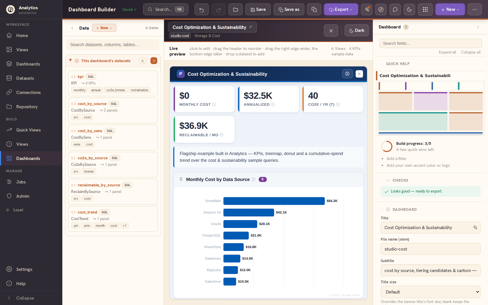
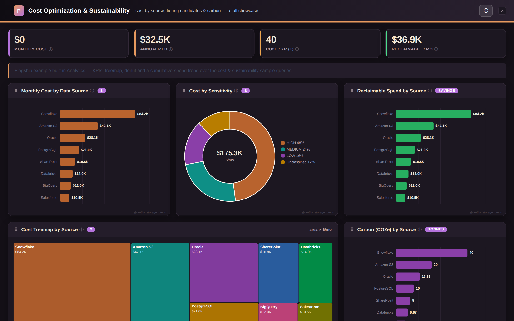
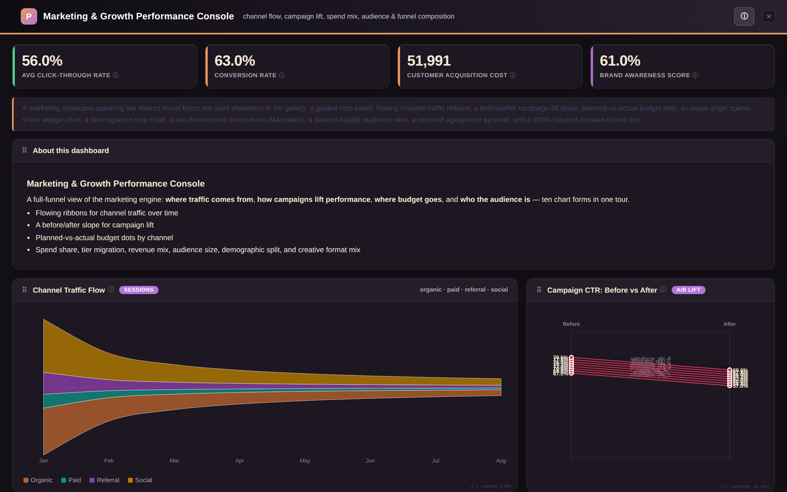
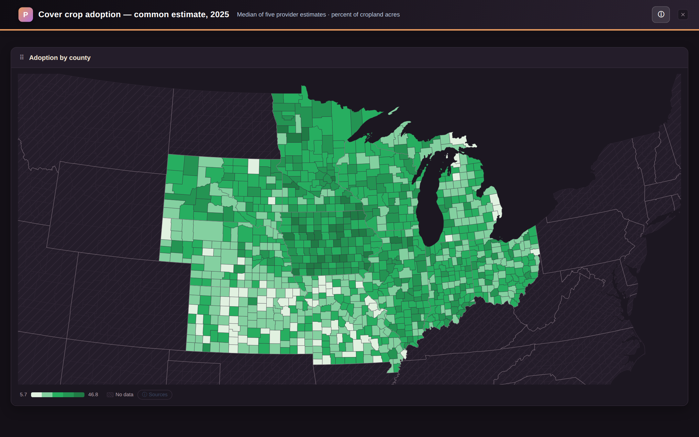
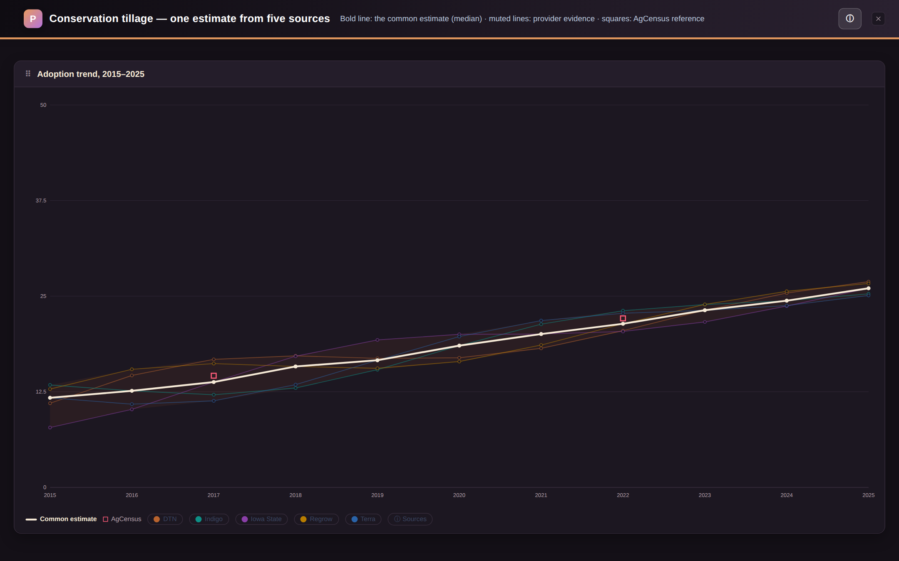
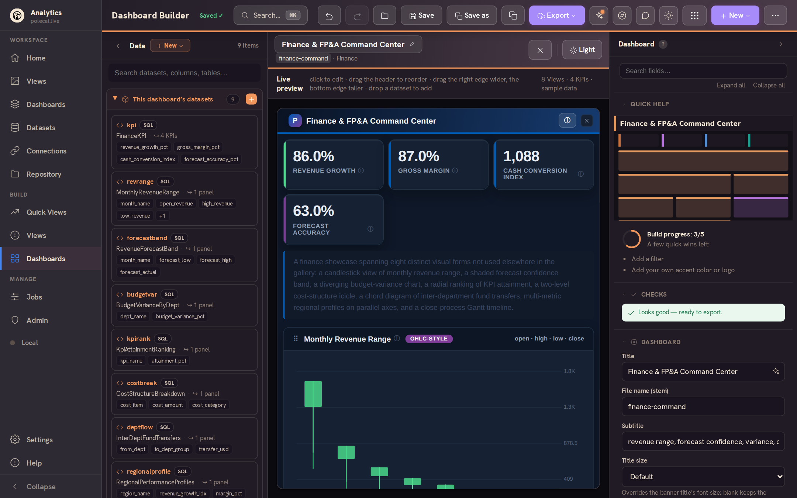

Connect your data.
Build beautiful dashboards.
Share them anywhere.
A full analytics workspace that runs entirely in your browser — connect databases, warehouses, files and Google Sheets, design interactive dashboards visually, and export them as single self-contained HTML files anyone can open. Free. Private. No account.






Everything an analytics team needs, nothing to run
Postgres (PostgREST), Supabase, Turso, Firebase, Snowflake, Databricks, BigQuery, DuckDB & SQLite over HTTP, Google Sheets, any SQL/HTTP API — or just drop a CSV/JSON file.
A three-pane studio: drag datasets onto the canvas, tune every chart in the inspector, and watch the real dashboard render live — 25+ chart types from KPIs to heatmaps to forecasts, including US choropleth maps down to county, district, and watershed scale.
Define a query once with {{parameters}}; dashboard template variables fill them at run time — one dataset powers many views, filters cascade, everything stays linked.
Every dashboard exports as one self-contained .html file — byte-identical to the live preview, no server, no dependencies. Email it, host it, embed it.
Your workspace lives in your browser and works offline. Optionally mirror it to your own Turso, Supabase or Firebase backend — with zero-knowledge secret encryption.
Warm themes, light and dark, keyboard palette, guided tour, version history with visual compare — analytics that feels like a creative tool, not a chore.
Your data, wherever it lives
Local-first never means local-only. Connections and datasets form a reusable catalog that follows you — and every adapter speaks a friendly, in-band-error dialect when something's misconfigured.